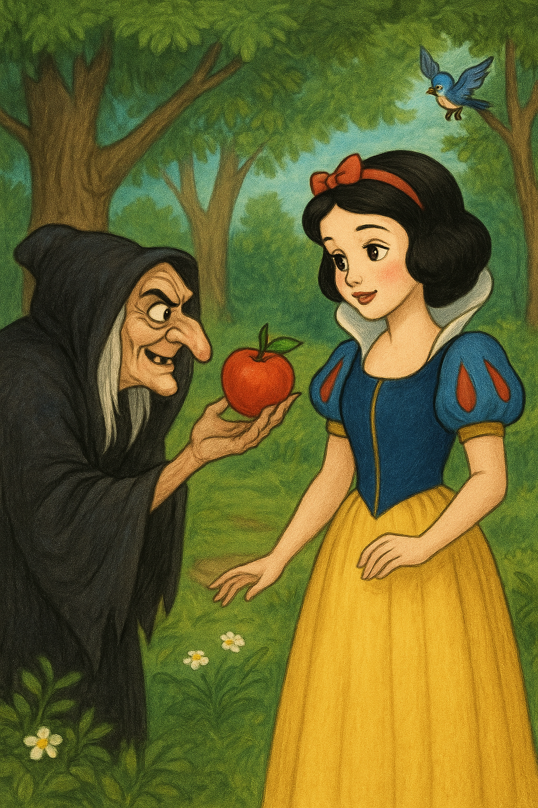

Blancanieves y los siete enanitos
Cuento clásico de los hermanos Grimm
Versión escrita por Paola Artmann
Érase una vez una joven y bella princesa llamada Blancanieves que vivía en un reino muy lejano con su padre y madrastra.
Su madrastra, la reina, era también muy hermosa, pero arrogante y orgullosa. Se pasaba todo el día contemplándose frente al espejo. El espejo era mágico y cuando se paraba frente a él, le preguntaba:
—Espejito, espejito, ¿quién es la más hermosa del reino?
Entonces el espejo respondía:
— Tú eres la más hermosa de todas las mujeres.
La reina quedaba satisfecha, pues sabía que su espejo siempre decía la verdad. Sin embargo, con el pasar de los años, la belleza y bondad de Blancanieves se hacían más evidentes. Por todas sus buenas cualidades, superaba mucho la belleza física de la reina. Y llegó al fin un día en que la reina preguntó de nuevo:
—Espejito, espejito, ¿quién es la más hermosa del reino?
El espejo contestó:
—Blancanieves, a quien su bondad la hace ser aún más bella que tú.
La reina se llenó de ira y ordenó la presencia del cazador y le dijo:
—Llévate a la joven princesa al bosque y asegúrate de que las bestias salvajes se encarguen de ella.
Con engaños, el cazador llevó a Blancanieves al bosque, pero cuando estaba a punto de cumplir las órdenes de la reina, se apiadó de la bella joven y dijo:
—Corre, vete lejos, pobre muchacha. Busca un lugar seguro donde vivir.
Encontrándose sola en el gran bosque, Blancanieves corrió tan lejos como pudo hasta la llegada del anochecer. Entonces divisó una pequeña cabaña y entró en ella para dormir. Todo lo que había en la cabaña era pequeño. Había una mesa con un mantel blanco y siete platos pequeños, y con cada plato una cucharita. También, había siete pequeños cuchillos y tenedores, y siete jarritas llenas de agua. Contra la pared se hallaban siete pequeñas camas, una junto a la otra, cubiertas con colchas tan blancas como la nieve.
Blancanieves estaba tan hambrienta y sedienta que comió un poquito de vegetales y pan de cada platito y bebió una gota de cada jarrita. Luego, quiso acostarse en una de las camas, pero ninguna era de su medida, hasta que finalmente pudo acomodarse en la séptima.
Cuando ya había oscurecido, regresaron los dueños de la cabaña. Eran siete enanos que cavaban y extraían oro y piedras preciosas en las montañas. Ellos encendieron sus siete linternas, y observaron que alguien había estado en la cabaña, pues las cosas no se encontraban en el mismo lugar.El primero dijo: —¿Quién se ha sentado en mi silla?
El segundo dijo: —¿Quién comió de mi plato?
El tercero dijo: —¿Quién mordió parte de mi pan?
El cuarto dijo: —¿Quién tomó parte de mis vegetales?
El quinto dijo: —¿Quién usó mi tenedor?
El sexto dijo: —¿Quién usó mi cuchillo?
El séptimo dijo: —¿Quién bebió de mi jarra?
Entonces el primero observó una arruga en su cama y dijo: —Alguien se ha metido en mi cama.
Y los demás fueron a revisar sus camas, diciendo: —Alguien ha estado en nuestras camas también.
Pero cuando el séptimo miró su cama, encontró a Blancanieves durmiendo plácidamente y llamó a los demás:
—¡Oh, cielos! —susurraron—. Qué encantadora muchacha
Cuando llegó el amanecer, Blancanieves se despertó muy asustada al ver a los siete enanos parados frente a ella. Pero los enanos eran muy amistosos y le preguntaron su nombre.
—Mi nombre es Blancanieves —respondió—, y les contó todo acerca de su malvada madrastra.
Los enanos dijeron:
—Si puedes limpiar nuestra casa, cocinar, tender las camas, lavar, coser y tejer, puedes quedarte todo el tiempo que quieras—. Blancanieves aceptó feliz y se quedó con ellos.
Pasó el tiempo y un día, la reina decidió consultar a su espejo y descubrió que la princesa vivía en el bosque. Furiosa, envenenó una manzana y tomó la apariencia de una anciana.
— Un bocado de esta manzana hará que Blancanieves duerma para siempre — dijo la malvada reina.
Al día siguiente, los enanos se marcharon a trabajar y Blancanieves se quedó sola.
Poco después, la reina disfrazada de anciana se acercó a la ventana de la cocina. La princesa le ofreció un vaso de agua.
—Eres muy bondadosa —dijo la anciana—. Toma esta manzana como gesto de agradecimiento.
En el momento en que Blancanieves mordió la manzana, cayó desplomada. Los enanos, alertados por los animales del bosque, llegaron a la cabaña mientras la reina huía. Con gran tristeza, colocaron a Blancanieves en una urna de cristal. Todos tenían la esperanza de que la hermosa joven despertase un día.
Y el día llegó cuando un apuesto príncipe que cruzaba el bosque en su caballo, vio a la hermosa joven en la urna de cristal y maravillado por su belleza, le dio un beso en la mejilla, la joven despertó al haberse roto el hechizo. Blancanieves y el príncipe se casaron y vivieron felices para siempre.